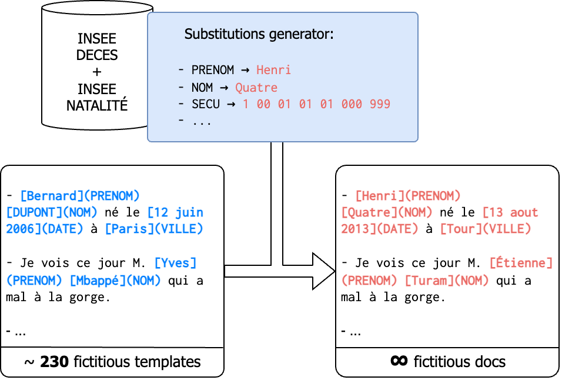

Dataset
Disclaimer
We do not provide our internal dataset due to privacy and regulatory constraints. You will however find the description of the dataset below. We also release the code for the rule-based annotation system.
You can find the fictive dataset generation description in the synthetic dataset section.
Format
We expect the annotations to be a jsonlines file with the following format:
{ "note_id": "any-id-1", "note_text": "Jacques Chirac a été maire de Paris", "entities": [{"start": 0, "end": 7, ...] }
{ "note_id": "any-id-2", "note_text": "Elle est née en 2006", "entities": [{"start": 16, "end": 20, ...] }
...
but you can change the format by modifying the config file, and the "datasets" part of it in particular, or the code of the adapter which is reponsible for loading the data during the training and evaluation.
Internal Data Selection
We annotated around 4000 documents, selected according to the distribution of AP-HP's Clinical Data Warehouse (CDW), to obtain a sample that is representative of the actual documents present within the CDW.
Training data are selected among notes that were edited after August 2017, in order to skew the model towards more recent clinical notes. The test set, however, is sampled without any time constraints, to make sure the model performs well overall.
To ensure the robustness of the model, training and test sets documents were generated from two different PDF extraction methods:
- the legacy method, based on PDFBox with a fixed mask
- our new method EDS-PDF with an adaptative (machine-learned) mask
Annotated Entities
We annotated clinical documents with the following entities :
| Label | Description |
|---|---|
ADRESSE |
Street address, eg 33 boulevard de Picpus |
DATE |
Any absolute date other than a birthdate |
DATE_NAISSANCE |
Birthdate |
HOPITAL |
Hospital name, eg Hôpital Rothschild |
IPP |
Internal AP-HP identifier for patients, displayed as a number |
MAIL |
Email address |
NDA |
Internal AP-HP identifier for visits, displayed as a number |
NOM |
Any last name (patients, doctors, third parties) |
PRENOM |
Any first name (patients, doctors, etc) |
SECU |
Social security number |
TEL |
Any phone number |
VILLE |
Any city |
ZIP |
Any zip code |
Statistics
To inspect the statistics for the latest version of our dataset, please refer to the v0.2.0 release.
Software
The software tools used to annotate the documents with personal identification entities were:
- LabelStudio for the first annotation campaign
- Metanno for the second annotation campaign but any annotation software will do.
Synthetic dataset
We will now describe the synthetic dataset generation process, used to produce the public pseudonymisation model.
Augmentation
Each synthetic training document is generated by augmenting a base fictitious template, replacing annotated entities with random values, generated from scratch or picked from a predefined public list :
PRENOM: INSEE deceased list and INSEE natality listNOM: INSEE deceased listVILLE: INSEE deceased listHOPITAL: Handcrafted listDATE: Random dates, formatted as the original value in the templateADRESSE: No augmentation for nowMAIL: Gen from fake first names, last names and handcrafted domainsTEL: Random phone numberZIP: Random zip codeIPP: Random numberNDA: Random numberSECU: Random number (following the French NSS format constraints)DATE_NAISSANCE: Random date

Template writing
The template writing process was done iteratively:
- We wrote a few starting annotated samples that we added to the base template list.
- We augmented the base templates following the process of the previous section.
- We trained the model on this augmented dataset.
- We evaluated the model on the internal training set (acting as a validation set).
- We picked the examples with the worst performance and wrote fictitious snippets with similar grammatical and syntactic structures and added them to the base template list.
- At the same time, we improved the augmentation process to account for these errors.
- We repeated the process starting from step 2 until we reached a satisfactory performance.